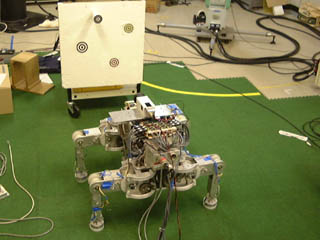

<!DOCTYPE HTML PUBLIC "-//W3C//DTD HTML 4.01//EN"
        "http://www.w3.org/TR/html4/strict.dtd">
<html lang=ja>
<head>
<title>Frame of Reference : $B2a5n$N8&5f(B</title>
<meta http-equiv=Content-type content="text/html; charset=iso-2022-jp">
<meta http-equiv=Content-style-type content="text/css">
<meta name=author content="$B:YED(B $B9L(B" >
<meta name=keywords content="$B%m%\%F%#%/%9(B, $B;2>H:BI8(B, $B%m%\%C%H$NCNG=(B">
<meta name=description
  content="$B$3$l$^$G$K:YED$K$h$C$F9T$o$l$?2a5n$N8&5f$K4X$9$k@bL@(B">
<link rel="stylesheet" type="text/css" href="green.css" media=all>
<link rel="stylesheet" type="text/css" href="greenj.css" media=all>
<link rev="made" href="Koh Hosoda">
<link rel="start" title="Frame of Reference: $B$40';"(B" href="indexj.html">
<link rel="alternate" hreflang="en" title="English home" href="pastwork.html">
</head>

<body>
<h1 class=hidden id=title>Frame of Reference</h1>

<div class=lastupdate>
<!-- hhmts start -->
Last modified: Mon Jul 05 13:26:12 JST 2004
<!-- hhmts end -->
</div>
<hr class=hidden>

<div class=contents title=contents>
<span class=title>$BL\<!(B:</span>
<ul class=contents>
  <li><a href="indexj.html">$B$40';"(B</a></li>
  <li><a href="cvj.html">$B8D?M>pJs(B</a></li>
  <li><a href="interestj.html">$B8&5f$N6=L#(B</a></li>
  <li><em>$B2a5n$N8&5f(B</em></li>
  <li><a href="papersj.html">$B4XO"O@J8(B</a></li>
  <li><a href="lecturesj.html">$BC4Ev9V5A(B</a></li>
  <li></li>
  <li><a href="pastwork.html">[English]</a></li>
</ul>
</div>
<hr class=hidden>

<div class=mainbody>

<h2>$B2a5n$N8&5f(B</h2>
<h3>$BH?<ME*9TF0$K4p$E$/;M5S%m%\%C%H$NJb9T$NAOH/(B<br>
Quadruped Walking Based on Reflective Behaviors</h3>

<h4>$B8&5fGX7J!'(B</h4>
<p>$B;M5SJb9T%m%\%C%H$N@)8f$H$7$F%*!<%=%I%C%/%9$J$N$O!$(B<em>1:</em>$B@_7W<T(B
$B$,%Z!<%9!$%H%m%C%H$J$I!$%m%\%C%H$NJbMF(B($BJb9T%Q%?!<%s(B)$B$r7h$a$k!$(B
<em>2:</em>$BJb9T%Q%?!<%s$K$7$?$,$C$F!$3F5S$NF0$-$,7h$^$k!$(B<em>3:</em>$B$=(B
$B$N5S$NF0$-$K4p$E$$$F!$3F4X@a$NL\I8CM$,7W;;$5$l$k!$(B<em>4:</em>$B$=$NL\I8(B
$BCM$KDI=>$9$k$h$&$K%5!<%\$rE,MQ$9$k!$$H$$$&J}K!$G$"$k!%%m%\%C%H$K;k3P%;(B
$B%s%5$J$I$N(B<em>$B303&%;%s%5(B</em>$B$,Ek:\$5$l!$4D6-$N4QB,$,$G$-$k>l9g$K$O!$(B
$B%;%s%5$+$i$N>pJs$K4p$E$$$FJbMF%Q%?!<%s$rJQ$(!$>e5-$N<jB3$-$K=>$C$F4D6-(B
$BJQ2=$KE,1~$9$k!%MF0W$KA[A|$,$D$/$h$&$K!$$3$N$h$&$JJ}K!$rMQ$$$?>l9g!$%;(B
$B%s%5$+$i$N>pJs$r(B<em>$BJ#?tCJ(B</em>$B$K$o$?$C$F=hM}$9$k$?$a!$(B<em>$B=hM}$K;~4V(B
$B$,$+$+$j!$$=$N7k2L4D6-$KBP$9$kH?1~B.EY$O2<$,$k(B</em>$B!%$^$?!$$"$i$+$8$a(B
$B7h$a$i$l$?JbMF$NHO0OFb$G$NE,1~$,$G$-$k$N$_$G!$>u67$K1~$8$F5S$NF0$+$7J}(B
$B$r=@Fp$KJQ2=$5$;$k$3$H$O:$Fq$G$"$k!%(B</p>
<h4>$B8&5fL\E*$H@.2L!'(B</h4>
<p>$BK\8&5f$NL\E*$O!$(B<em>$B4D6-JQ2=$KBP$7$F=@Fp$KE,1~$G$-$k;M5S%m%\%C%H(B</em>
$B$N9=C[$G$"$k!%4D6-$KBP$9$kE,1~@-$r8~>e$9$k$?$a$K$O!$4D6-$N>uBV$r4QB,$9(B
$B$k303&%;%s%5$N?.9f$r!$$G$-$k$@$1B.$/!$$7$+$bD>@\@)8f$KH?1G$5$;$k$3$H$,(B
$B%-!<$H$J$k(B($B;k3P%5!<%\$HF1$89M$(J}!$%5%V%5%s%W%7%g%s%"!<%-%F%/%A%c$N4p(B
$BK\$G$b$"$k(B)$B!%(B</p>
<p>$B$=$3$G!$$3$N$h$&$J@)8f$r<B8=$9$k$?$a$N%"!<%-%F%/%A%c$H$7$F!$(B<em>$B;k(B
$B3P%5!<%\$K$h$k@)8f(B</em>$B$H!$(B<em>$B5S@h$KHw$(IU$1$i$l$?NO%;%s%5$K4p$E$/1?(B
$B5S@)8f(B</em>$B$NAH$_9g$o$;$r:n$j!$$3$l$K$h$C$F!$M[$KJb9T(B/$BJbMF$r7W2h$9$k$3(B
$B$HL5$7$KJb9T$,(B<em>$BAOH/(B(emergence)</em>$B$5$l$k$3$H$r<($7$?!%(B</p>
<h4>$BO@J8!'(B</h4>
<ul class=bibliography>
  <li> <em>Koh Hosoda</em>, Takahiro Miyashita, and Minoru Asada,
       ``Emergence of Quadruped Walk by a Combination of Reflexes'',
       Proc. of the International Symposium on Adaptive Motion of
       Animals and machines,
       CD-ROM,
       2000.</li>
 <li> Takahiro Miyashita, <em>Koh Hosoda</em>,
      and Minoru Asada, ``Reflective
      walk based on lifted leg control and vision-cued swaying
      control'', Proc. of 1998 BSMEE International Symposium on
      Climbing and Walking Robots(CLAWAR'98), pp.349--354, 1998. </li>
 <li> Takahiro Miyashita, <em>Koh Hosoda</em>,
      and Minoru Asada, ``Hybrid
      Structure of Reflective Gait Control and Visual Servoing for
      Walking'', Proc. of IEEE/RSJ International Conference on
      Intelligent Robots and Systems 1998 (IROS '98), pp.229--234,
      1998. </li>
 <li> <em>Koh Hosoda</em>, Takahiro Miyashita,
      Susumu Takeuchi, and Minoru Asada,
      ``Adaptive Visual Servoing for Legged Robots --Vision-Cued Swaying
      of Legged Robots in Unknown Environments--'', Proc. of IEEE/RSJ
      Int. Conf. on Intelligent Robots and Systems 1997 (IROS'97),
      pp.778--784 1997.</li>
 <li> Takahiro Miyashita, <em>Koh Hosoda</em>,
      and Minoru Asada, ``An
      Environmental Representation for a Legged Robot Based on Visual
      Guidance'', Proc. of 6th European Workshop on Learning Robots
      (EWLR-6), pp.121--126, 1997.<li>
 <li> <em>Koh Hosoda</em>, Mitsuhiko Kamado, and
      Minoru Asada, ``Vision-based
      servoing control for legged robots'', Proc. of IEEE Int.  Conf. on
      Robotics and Automation, pp.3154--3159, 1997.</li>
</ul>
<h4>$B4XO"9`L\!'(B</h4>
<ul>
  <li> $B%m%\%C%H:BI87O$H@$3&:BI87O$K$D$$$F$N;2>H%U%l!<%`LdBj(B</li>
  <li> $B;k3P%5!<%\(B</li>
</ul>
<div class=navi>
<a class=navi href="#top">
$B"%(B Page Top (T)</a> 
</div>
<hr class=hidden>
<!---------------------------------------------------------------->
<h3>$B;k3P$HNO3P$r;}$D%m%\%C%H$NE,1~E*@)8f7O(B<br>
Hybrid Vision/Force Servoing Control</h3>
<h4>$B8&5fGX7J!'(B</h4>
<h4>$B8&5fL\E*$H@.2L!'(B</h4>
<h4>$BO@J8!'(B</h4>
<h4>$B4XO"9`L\!'(B</h4>
<div class=navi>
<a class=navi href="#top">
$B"%(B Page Top (T)</a> 
</div>
<hr class=hidden>
<!---------------------------------------------------------------->
<h3>$B%+%a%i$N%:!<%`5!9=$rMxMQ$7$?;k3P%5!<%\(B<br>
Visual Servoing Utilizing Zoom Mechanism</h3>
<h4>$B8&5fGX7J!'(B</h4>
<h4>$B8&5fL\E*$H@.2L!'(B</h4>
<h4>$BO@J8!'(B</h4>
<h4>$B4XO"9`L\!'(B</h4>
<div class=navi>
<a class=navi href="#top">
$B"%(B Page Top (T)</a> 
</div>
<hr class=hidden>
<!---------------------------------------------------------------->
<h3>$BE,1~E*;k3P%5!<%\(B<br>
Adaptive Visual Servoing</h3>
<h4>$B8&5fGX7J!'(B</h4>
<h4>$B8&5fL\E*$H@.2L!'(B</h4>
<h4>$BO@J8!'(B</h4>
<h4>$B4XO"9`L\!'(B</h4>
<div class=navi>
<a class=navi href="#top">
$B"%(B Page Top (T)</a> 
</div>
<hr class=hidden>
<!---------------------------------------------------------------->
<h3>$B%^%/%m!&%^%$%/%m%^%K%T%e%l!<%?%7%9%F%`$N@_7W$H@)8f(B<br>
Macro/Micro Manipulator Systems</h3>
<h4>$B8&5fGX7J!'(B</h4>
<p>$B=@Fp$J%^%K%T%e%l!<%?$K$h$C$F!$?6F0$d$?$o$_$N1F6A$r$J$k$Y$/2!$5$($F(B
$B:n6H$r<B8=$9$kJ}K!$N0l$D$H$7$F!$%^%K%T%e%l!<%?$N@hC<$K$h$j9d@-$,9b$/!$(B
$B>.$5$$%^%K%T%e%l!<%?$r<h$jIU$1$k!$(B<em>$B%^%/%m!&%^%$%/%m%^%K%T%e%l!<%?(B</em>($B?F;R(B
$B%"!<%`$J$I$H8F$P$l$k$3$H$b$"$k(B)$B$N9=@.$,9M$($i$l$k!%Nc$($P!$%9%Z!<%9%7%c(B
$B%H%k$KEk:\$5$l$k%"!<%`$d!$9b05EE@~:n6HMQ$N%^%K%T%e%l!<%?$J$I$K$3$N$h$&(B
$B$J%^%/%m!&%^%$%/%m%^%K%T%e%l!<%?$,:NMQ$5$l$F$$$k!%(B</p>
<h4>$B8&5fL\E*$H@.2L!'(B</h4>
<p>$B$3$N8&5f$G$O!$=@Fp$J%^%/%m%^%K%T%e%l!<%?$,@8$8$k?6F0$d$?$o$_$r!$$h(B
$B$j%5%$%:$N>.$5$$%^%K%T%e%l!<%?$GJd=~$G$-$k$+$I$&$+$r4v2?3XE*$KD4$Y!$=`(B
$B@EE*$J@)8f$K$h$C$FJd=~$9$k=`@EE*!$$"$k$$$O%^%K%T%e%l!<%?A4BN$NF0NO3XE*(B
$B$J@-<A$^$G$r9MN8$7$F@)8f$9$kF0E*50F;@)8f!$$=$7$F?6F0$K$h$C$F@8$8$kNO$N(B
$B$U$i$D$-$rJd=~$9$kNO@)8f$rDs0F$7!$<B83E*$K$=$NM-8z@-$r8!>Z$7$F$$$k!%(B</p>
<h4>$BO@J8!'(B</h4>
<ul class=bibliography>
  <li class=japanese lang="jp"> $B5H@n91IW!$(B<em>$B:YED9L(B</em>$B!$EZ0fMx<!!$(B"
    $B%^%/%m!]%^%$%/%m%7%9%F%`$K$h$k%U%l%-%7%V%k%"!<%`$NF0E*50F;@)8f(B"$B!$(B
    $BF|K\%m%\%C%H3X2q;o!$(B12$B4,!$(B2$B9f!$(Bpp.131-135$B!$(B1994$B!%(B</li>
  <li class=japanese lang="jp"> $B5H@n91IW!$(B<em>$B:YED9L(B</em>$B!$(B"$B%^%/%m!&%^(B
    $B%$%/%m%7%9%F%`$K$h$k%U%l%-%7%V%k!&%^%K%T%e%l!<%?$N@)8f(B"$B!$F|K\%m%\%C(B
    $B%H3X2q;o!$(B12$B4,!$(B2$B9f!$(Bpp.39-44$B!$(B1994$B!%(B</li>
  <li class=japanese lang="jp"> $B5H@n91IW!$(B<em>$B:YED9L(B</em>$B!$EZ0fMx<!!$(B"
   $B%^%/%m!]%^%$%/%m%7%9%F%`$K$h$k%U%l%-%7%V%k%"!<%`$N=`@EE*50F;@)8f(B"$B!$(B
   $BF|K\%m%\%C%H3X2q;o!$(B11$B4,!$(B1$B9f!$(Bpp.140-147$B!$(B1993$B!%(B</li>
 <li> Tsuneo Yoshikawa, <em>Koh Hosoda</em>,
      Kensuke Harada, Atsushi Matsumoto,
      and Hiroki Murakami, ``Hybrid Position/Force Control of Flexible
      Manipulators by Macro-Micro Manioulator System'', Proc. of IEEE
      Int. Conf. on Robotics and Automation, pp.2125--2129, 1994.</li>
 <li> Tsuneo Yoshikawa, <em>Koh Hosoda</em>, and
      Toshitsugu Doi, ``Dynamic
      Trajectory Tracking Control of Flexible Manipulator by Macro-Micro
      Manipulator System'', Proc. of IEEE Int. Conf. on Robotics and
      Automation, pp.1804--1809, 1994.</li>
 <li> Tsuneo Yoshikawa, <em>Koh Hosoda</em>, and
      Toshitsugu Doi, ``Quasi-Static
      Trajectory Tracking Control of Flexible Manipulator by Maco-Micro
      System'', Proc. of IEEE Int. Conf. on Robotics and Automation,
      pp.(3)210--215, 1993.</li>
</ul>
<h4>$B4XO"9`L\!'(B</h4>
<div class=navi>
<a class=navi href="#top">
$B"%(B Page Top (T)</a> 
</div>
<hr class=hidden>
<!---------------------------------------------------------------->
<h3>$B%U%l%-%7%V%k%"!<%`$N%b%G%k2=$H@)8f(B<br>
Modeling and Control of Flexible Manipulators</h3>
<h4>$B8&5fGX7J!'(B</h4>
<p>$B1'Ch$G%m%\%C%H%"!<%`$r;HMQ$9$k>l9g!$07$&BP>]J*$OBg$-$/!$$=$N$?$a$K%"!<(B
$B%`<+BN$,Hs>o$K(B<em>$BD9<\(B</em>$B$G$"$kH?LL!$BG$A>e$2$K$+$+$k%3%9%H$r>.$5$/(B
$B$9$k$?$a!$(B<em>$B=ENL$O$G$-$k$@$1>.$5$$(B</em>$B$[$&$,$h$$!%$7$?$,$C$F%m%\%C(B
$B%H%"!<%`$O!$I,A3E*$K(B<em>$B9d@-$,Dc$/(B</em>$B$J$j!$(B<em>$B?6F0?t$NDc$$?6F0(B</em>
$B$rH/@8$9$k!%$3$N$h$&$J?6F0$r@)8f$7!$9bB.9b@:EY$NF0$-$r<B8=$9$k$3$H$,I,(B
$BMW$H$5$l$F$$$k!%$3$N$h$&$JLdBj$O1'Ch$G$O82Cx$G$"$k$,!$CO>e$ND9<\$J0lHL(B
$BE*%"!<%`$K$bH/@8$9$kLdBj$G$"$k!%$3$N$h$&$J%"!<%`$N$3$H$r(B<em>$B%U%l%-%7%V(B
$B%k%"!<%`(B</em>$B$H8F$V!%(B</p>
<h4>$B8&5fL\E*$H@.2L!'(B</h4>
<p>$B$3$N8&5f$G$O!$%U%l%-%7%V%k%"!<%`$N?6F0$r2!$5$(!$$$$+$K$7$F@)8f$9$k$+$H(B
$B$$$&?6F0@)8f$r<B8=$9$k$?$a!$%"!<%`$N?6F0$r%b%G%k2=$9$kJ}K!!$?6F0$rM^@)(B
$B$9$k@)8fB'!$$*$h$S?6F0$9$kD9<\$J%"!<%`$N@h$K!$>.$5$$%^%$%/%m%"!<%`$r<h(B
$B$jIU$1$F!$@hC<$G$N?6F0$rJ]>Z$9$kJ}K!$K$D$$$F8&5f$7$?!%(B</p>
<p>$B$^$:?6F0$r%b%G%k2=$9$kJ}K!$G$"$k$,!$@hC<$NIi2Y$,Hs>o$KBg$-$/!$%"!<(B
$B%`<+BN$N<ANL$,L5;k$G$-$k$h$&$J>l9g$N(B<em>$B#3<!85$P$M!&<ANL%b%G%k(B</em>$B!$(B
$B%"!<%`<+BN$N<ANL$,L5;k$G$-$J$$>l9g$K!$4JC1$J;n9T<B83$K$h$C$F%Q%i%a!<%?(B
$B$rF1Dj$G$-$k(B<em>$B2>A[9dBN%j%s%/!&<uF04X@a%b%G%k(B</em>$B$rDs0F$7$?!%(B</p>
<p>$B#3<!85$P$M!&<ANL%b%G%k$rMQ$$!$#34X@a#2%j%s%/$N(BPUMA$B7?%"!<%`$K$D$$$F!$(B
$B?6F0M^@)@)8f$rF3$-!$<B83$K$h$j@)?68z2L$r8!>Z$7$?!%(B</p>
<h4>$BO@J8!'(B</h4>
<ul class=bibliography>
 <li> Tsuneo Yoshikawa and <em>Koh Hosoda</em>,
      ``Modeling of Flexible
      Manipulaotrs Using Virtual Rigid Links and Passive Joints'', The
      International Journal of Robotics Research, Vol.15, No.3,
      pp.290--299, 1996.</li>
  <li class=japanese lang="jp"> <em>$B:YED9L(B</em>$B!$5H@n91IW!$(B"$BJ?LL(B2$B<+M3(B
   $BEY%U%l%-%7%V%k%"!<%`$N50F;@)8f(B"$B!$F|K\%m%\%C%H3X2q!$(B11$B4,!$(B7$B9f!$(B
   pp.134-140$B!$(B1993$B!%(B</li>
 <li> Tsuneo Yoshikawa, Hiroki Murakami and <em>Koh
      Hosoda</em>, ``Modeling and
      Control of a Three Degree of Freedom Manipulator with Two
      Flexible Links'', Experimental Robotics II, The 2nd International
      Symposium, Springer, pp.531--545, 1993.</li>
  <li class=japanese lang="jp"> $B5H@n91IW!$(B<em>$B:YED9L(B</em>$B!$(B"$B2>A[E*$J9d(B
   $BBN%j%s%/$H<uF04X@a$rMQ$$$?%U%l%-%7%V%k%"!<%`$N%b%G%j%s%0(B"$B!$7WB,<+F0(B
   $B@)8f3X2qO@J8=8!$(B27$B4,!$(B12$B9f!$(Bpp.1389-1395$B!$(B1991$B!%(B</li>
 <li> Tsuneo Yoshikawa and <em>Koh Hosoda</em>,
      ``Modeling of Flexible
      Manipulators Using Virtual Rigid Links and Passive Joints'', Proc. 
      of IEEE/RSJ Int. Workshop on Intelligent Robots and
      Systems(IROS'91), pp.967--972, 1991.</li>
  <li class=japanese lang="jp"> $B5H@n91IW!$B<>e905-!$(B<em>$B:YED9L(B</em>$B!$(B
   "2$BK\$N%U%l%-%7%V%k%j%s%/$rM-$9$k(B3$B<+M3EY%^%K%T%e%l!<%?$N%b%G%j%s%0$H(B
   $B@)8f(B"$B!$F|K\%m%\%C%H3X2q;o!$(B9$B4,!$(B1$B9f!$(Bpp.1-10$B!$(B1991$B!%(B</li>
 <li> Tsuneo Yoshikawa, Hiroki Murakami and <em>Koh
      Hosoda</em>, ``Modeling and
      Control of a Three Degree of Freedom Manipulator with Two Flexible
      Links'', Proc. of IEEE Int. Conf. on Decision and Control,
      pp.2532--2537, 1990.</li>
 <li> Tsuneo Yoshikawa, Hiroki Murakami and <em>Koh
      Hosoda</em>, ``Modeling and
      Control of a Three Degree of Freedom Manipulator with Two Flexible
      Links'', Proc. of Japan-U.S.A. Symp. on Flexible Automation,
      pp.965--971, 1990.</li>
</ul>


<h4>$B4XO"9`L\!'(B</h4>
<div class=navi>
<a class=navi href="#top">
$B"%(B Page Top (T)</a> 
</div>
<hr class=hidden>
<!---------------------------------------------------------------->
<address>
<a href="http://validator.w3.org/check/referer">
</a><br>
Copyright &copy; Koh Hosoda
</address>
</div>
</body>
</html>
